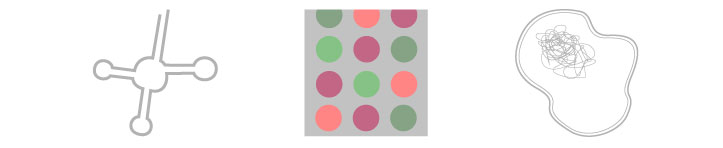

Study of Non-coding RNAs and Extremophile Biology
The research in our lab uses a mixture of computational and experimental genomics to Identify and characterize of non-coding RNA (ncRNA) genes, and study the unique biology of archaeal "extremophiles" - microbes that live at the edge of the limits of life (high/low temperature, pH, salt, pressure).
On the experimental side, we do ncRNA discovery via next-generation RNA sequencing, and analysis of transcriptional profiles using hybridization to in-house generated DNA microarrays, augmented by traditional molecular biology characterization. We believe tight integration of theoretical and experimental approaches is the quickest, most efficient path to discovery. We have also created full genome DNA microarrays for two of the most extreme hyperthermophilic Archaea sequenced to date, Pyrococcus furiosus and Pyrobaculum aerophilum, which natively grow at boiling temperatures.
On the computational side, we develop and refine methods to detect RNA genes in genomic sequence using probabilistic models and comparative genomics. We also analyze RNA-seq data for novel transcript detection, and extremophile array data to predict functional roles for genes of unknown function, identify the major players in various cellular stresses, and develop robust functional clusters.
Opportunites
The lab is currently taking both MCD biology and School of Engineering graduate students who have a keen interest in one or more of these areas. Postdocs with strong backgrounds in RNA biochemistry (esp. small RNAs) or microbial physiology (esp. in Archaea) are encouraged to apply to the lab (please send an email and CV). If you are not currently a graduate student at UCSC, please see information for Bioinformatics program or MCD Biology program. I only take enrolled grad students after a rotation in the lab (please do not email requests for direct admittance to either program through my lab).